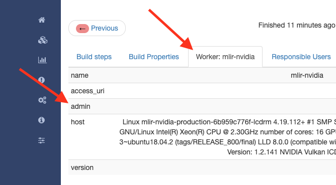

LLVM Developer Policy¶
Introduction¶
This document contains the LLVM Developer Policy which defines the project’s policy towards developers and their contributions. The intent of this policy is to eliminate miscommunication, rework, and confusion that might arise from the distributed nature of LLVM’s development. By stating the policy in clear terms, we hope each developer can know ahead of time what to expect when making LLVM contributions. This policy covers all llvm.org subprojects, including Clang, LLDB, libc++, etc.
This policy is also designed to accomplish the following objectives:
Attract both users and developers to the LLVM project.
Make life as simple and easy for contributors as possible.
Keep the top of tree as stable as possible.
Establish awareness of the project’s copyright, license, and patent policies with contributors to the project.
This policy is aimed at frequent contributors to LLVM. People interested in contributing one-off patches can do so in an informal way by sending them to the llvm-commits mailing list and engaging another developer to see it through the process.
Developer Policies¶
This section contains policies that pertain to frequent LLVM developers. We always welcome one-off patches from people who do not routinely contribute to LLVM, but we expect more from frequent contributors to keep the system as efficient as possible for everyone. Frequent LLVM contributors are expected to meet the following requirements in order for LLVM to maintain a high standard of quality.
Stay Informed¶
Developers should stay informed by reading the LLVM Discourse forums. If you are doing anything more than just casual work on LLVM, it is suggested that you also subscribe to the “commits” mailing list for the subproject you’re interested in, such as llvm-commits, cfe-commits, or lldb-commits. Reading the “commits” list and paying attention to changes being made by others is a good way to see what other people are interested in and watching the flow of the project as a whole.
We recommend that active developers monitor incoming issues to our GitHub issue tracker and preferably subscribe to the llvm-bugs email list to keep track of bugs and enhancements occurring in LLVM. We really appreciate people who are proactive at catching incoming bugs in their components and dealing with them promptly.
Please be aware that all public LLVM mailing lists and discourse forums are public and archived, and that notices of confidentiality or non-disclosure cannot be respected.
Making and Submitting a Patch¶
When making a patch for review, the goal is to make it as easy for the reviewer to read it as possible. As such, we recommend that you:
Make your patch against git main, not a branch, and not an old version of LLVM. This makes it easy to apply the patch. For information on how to clone from git, please see the Getting Started Guide.
Similarly, patches should be submitted soon after they are generated. Old patches may not apply correctly if the underlying code changes between the time the patch was created and the time it is applied.
Patches should be unified diffs with “infinite context” (i.e. using something like git diff -U999999 main).
Once you have created your patch, create a Phabricator review for it (or commit it directly if applicable).
When submitting patches, please do not add confidentiality or non-disclosure notices to the patches themselves. These notices conflict with the LLVM licensing terms and may result in your contribution being excluded.
Code Reviews¶
LLVM has a code-review policy. Code review is one way to increase the quality of software. Please see LLVM Code-Review Policy and Practices for more information on LLVM’s code-review process.
Code Owners¶
The LLVM Project relies on two features of its process to maintain rapid development in addition to the high quality of its source base: the combination of code review plus post-commit review for trusted maintainers. Having both is a great way for the project to take advantage of the fact that most people do the right thing most of the time, and only commit patches without pre-commit review when they are confident they are right.
The trick to this is that the project has to guarantee that all patches that are committed are reviewed after they go in: you don’t want everyone to assume someone else will review it, allowing the patch to go unreviewed. To solve this problem, we have a notion of an ‘owner’ for a piece of the code. The sole responsibility of a code owner is to ensure that a commit to their area of the code is appropriately reviewed, either by themself or by someone else. The list of current code owners can be found in the file CODE_OWNERS.TXT in the root of the LLVM source tree.
Note that code ownership is completely different than reviewers: anyone can review a piece of code, and we welcome code review from anyone who is interested. Code owners are the “last line of defense” to guarantee that all patches that are committed are actually reviewed.
Being a code owner is a somewhat unglamorous position, but it is incredibly important for the ongoing success of the project. Because people get busy, interests change, and unexpected things happen, code ownership is purely opt-in, and anyone can choose to resign their “title” at any time. For now, we do not have an official policy on how one gets elected to be a code owner.
Test Cases¶
Developers are required to create test cases for any bugs fixed and any new features added. Some tips for getting your testcase approved:
All feature and regression test cases are added to the
llvm/testdirectory. The appropriate sub-directory should be selected (see the Testing Guide for details).Test cases should be written in LLVM assembly language.
Test cases, especially for regressions, should be reduced as much as possible, by bugpoint or manually. It is unacceptable to place an entire failing program into
llvm/testas this creates a time-to-test burden on all developers. Please keep them short.
Note that llvm/test and clang/test are designed for regression and small feature
tests only. More extensive test cases (e.g., entire applications, benchmarks,
etc) should be added to the llvm-test test suite. The llvm-test suite is
for coverage (correctness, performance, etc) testing, not feature or regression
testing.
Release Notes¶
Many projects in LLVM communicate important changes to users through release
notes, typically found in docs/ReleaseNotes.rst for the project. Changes to
a project that are user-facing, or that users may wish to know about, should be
added to the project’s release notes at the author’s or code reviewer’s
discretion, preferably as part of the commit landing the changes. Examples of
changes that would typically warrant adding a release note (this list is not
exhaustive):
Adding, removing, or modifying command-line options.
Adding, removing, or regrouping a diagnostic.
Fixing a bug that potentially has significant user-facing impact (please link to the issue fixed in the bug database).
Adding or removing optimizations that have widespread impact or enables new programming paradigms.
Modifying a C stable API.
Notifying users about a potentially disruptive change expected to be made in a future release, such as removal of a deprecated feature.
Code reviewers are encouraged to request a release note if they think one is warranted when performing a code review.
Quality¶
The minimum quality standards that any change must satisfy before being committed to the main development branch are:
Code must adhere to the LLVM Coding Standards.
Code must compile cleanly (no errors, no warnings) on at least one platform.
Bug fixes and new features should include a testcase so we know if the fix/feature ever regresses in the future.
Code must pass the
llvm/testtest suite.The code must not cause regressions on a reasonable subset of llvm-test, where “reasonable” depends on the contributor’s judgement and the scope of the change (more invasive changes require more testing). A reasonable subset might be something like “
llvm-test/MultiSource/Benchmarks”.
Additionally, the committer is responsible for addressing any problems found in the future that the change is responsible for. For example:
The code should compile cleanly on all supported platforms.
The changes should not cause any correctness regressions in the
llvm-testsuite and must not cause any major performance regressions.The change set should not cause performance or correctness regressions for the LLVM tools.
The changes should not cause performance or correctness regressions in code compiled by LLVM on all applicable targets.
You are expected to address any GitHub Issues that result from your change.
We prefer for this to be handled before submission but understand that it isn’t possible to test all of this for every submission. Our build bots and nightly testing infrastructure normally finds these problems. A good rule of thumb is to check the nightly testers for regressions the day after your change. Build bots will directly email you if a group of commits that included yours caused a failure. You are expected to check the build bot messages to see if they are your fault and, if so, fix the breakage.
Commits that violate these quality standards (e.g. are very broken) may be reverted. This is necessary when the change blocks other developers from making progress. The developer is welcome to re-commit the change after the problem has been fixed.
Commit messages¶
Although we don’t enforce the format of commit messages, we prefer that you follow these guidelines to help review, search in logs, email formatting and so on. These guidelines are very similar to rules used by other open source projects.
Most importantly, the contents of the message should be carefully written to convey the rationale of the change (without delving too much in detail). It also should avoid being vague or overly specific. For example, “bits were not set right” will leave the reviewer wondering about which bits, and why they weren’t right, while “Correctly set overflow bits in TargetInfo” conveys almost all there is to the change.
Below are some guidelines about the format of the message itself:
Separate the commit message into title and body separated by a blank line.
If you’re not the original author, ensure the ‘Author’ property of the commit is set to the original author and the ‘Committer’ property is set to yourself. You can use a command similar to
git commit --amend --author="John Doe <jdoe@llvm.org>"to correct the author property if it is incorrect. See Attribution of Changes for more information including the method we used for attribution before the project migrated to git.The title should be concise. Because all commits are emailed to the list with the first line as the subject, long titles are frowned upon. Short titles also look better in git log.
When the changes are restricted to a specific part of the code (e.g. a back-end or optimization pass), it is customary to add a tag to the beginning of the line in square brackets. For example, “[SCEV] …” or “[OpenMP] …”. This helps email filters and searches for post-commit reviews.
The body, if it exists, should be separated from the title by an empty line.
The body should be concise, but explanatory, including a complete reasoning. Unless it is required to understand the change, examples, code snippets and gory details should be left to bug comments, web review or the mailing list.
If the patch fixes a bug in GitHub Issues, please include the PR# in the message.
Text formatting and spelling should follow the same rules as documentation and in-code comments, ex. capitalization, full stop, etc.
If the commit is a bug fix on top of another recently committed patch, or a revert or reapply of a patch, include the git commit hash of the prior related commit. This could be as simple as “Revert commit NNNN because it caused PR#”.
If the patch has been reviewed, add a link to its review page, as shown here.
For minor violations of these recommendations, the community normally favors reminding the contributor of this policy over reverting. Minor corrections and omissions can be handled by sending a reply to the commits mailing list.
Patch reversion policy¶
As a community, we strongly value having the tip of tree in a good state while allowing rapid iterative development. As such, we tend to make much heavier use of reverts to keep the tree healthy than some other open source projects, and our norms are a bit different.
How should you respond if someone reverted your change?
Remember, it is normal and healthy to have patches reverted. Having a patch reverted does not necessarily mean you did anything wrong.
We encourage explicitly thanking the person who reverted the patch for doing the task on your behalf.
If you need more information to address the problem, please follow up in the original commit thread with the reverting patch author.
When should you revert your own change?
Any time you learn of a serious problem with a change, you should revert it. We strongly encourage “revert to green” as opposed to “fixing forward”. We encourage reverting first, investigating offline, and then reapplying the fixed patch - possibly after another round of review if warranted.
If you break a buildbot in a way which can’t be quickly fixed, please revert.
If a test case that demonstrates a problem is reported in the commit thread, please revert and investigate offline.
If you receive substantial post-commit review feedback, please revert and address said feedback before recommitting. (Possibly after another round of review.)
If you are asked to revert by another contributor, please revert and discuss the merits of the request offline (unless doing so would further destabilize tip of tree).
When should you revert someone else’s change?
In general, if the author themselves would revert the change per these guidelines, we encourage other contributors to do so as a courtesy to the author. This is one of the major cases where our norms differ from others; we generally consider reverting a normal part of development. We don’t expect contributors to be always available, and the assurance that a problematic patch will be reverted and we can return to it at our next opportunity enables this.
What are the expectations around a revert?
Use your best judgment. If you’re uncertain, please start an email on the commit thread asking for assistance. We aren’t trying to enumerate every case, but rather give a set of guidelines.
You should be sure that reverting the change improves the stability of tip of tree. Sometimes reverting one change in a series can worsen things instead of improving them. We expect reasonable judgment to ensure that the proper patch or set of patches is being reverted.
The commit message for the reverting commit should explain why patch is being reverted.
It is customary to respond to the original commit email mentioning the revert. This serves as both a notice to the original author that their patch was reverted, and helps others following llvm-commits track context.
Ideally, you should have a publicly reproducible test case ready to share. Where possible, we encourage sharing of test cases in commit threads, or in PRs. We encourage the reverter to minimize the test case and to prune dependencies where practical. This even applies when reverting your own patch; documenting the reasons for others who might be following along is critical.
It is not considered reasonable to revert without at least the promise to provide a means for the patch author to debug the root issue. If a situation arises where a public reproducer can not be shared for some reason (e.g. requires hardware patch author doesn’t have access to, sharp regression in compile time of internal workload, etc.), the reverter is expected to be proactive about working with the patch author to debug and test candidate patches.
Reverts should be reasonably timely. A change submitted two hours ago can be reverted without prior discussion. A change submitted two years ago should not be. Where exactly the transition point is is hard to say, but it’s probably in the handful of days in tree territory. If you are unsure, we encourage you to reply to the commit thread, give the author a bit to respond, and then proceed with the revert if the author doesn’t seem to be actively responding.
When re-applying a reverted patch, the commit message should be updated to indicate the problem that was addressed and how it was addressed.
Obtaining Commit Access¶
We grant commit access to contributors with a track record of submitting high quality patches. If you would like commit access, please send an email to Chris with your GitHub username. This is true for former contributors with SVN access as well as new contributors. If approved, a GitHub invitation will be sent to your GitHub account. In case you don’t get notification from GitHub, go to Invitation Link directly. Once accept the invitation, you’ll get commit access.
Prior to obtaining commit access, it is common practice to request that someone with commit access commits on your behalf. When doing so, please provide the name and email address you would like to use in the Author property of the commit.
For external tracking purposes, committed changes are automatically reflected on a commits mailing list soon after the commit lands (e.g. llvm-commits). Note that these mailing lists are moderated, and it is not unusual for a large commit to require a moderator to approve the email, so do not be concerned if a commit does not immediately appear in the archives.
If you have recently been granted commit access, these policies apply:
You are granted commit-after-approval to all parts of LLVM. For information on how to get approval for a patch, please see LLVM Code-Review Policy and Practices. When approved, you may commit it yourself.
You are allowed to commit patches without approval which you think are obvious. This is clearly a subjective decision — we simply expect you to use good judgement. Examples include: fixing build breakage, reverting obviously broken patches, documentation/comment changes, any other minor changes. Avoid committing formatting- or whitespace-only changes outside of code you plan to make subsequent changes to. Also, try to separate formatting or whitespace changes from functional changes, either by correcting the format first (ideally) or afterward. Such changes should be highly localized and the commit message should clearly state that the commit is not intended to change functionality, usually by stating it is NFC.
You are allowed to commit patches without approval to those portions of LLVM that you have contributed or maintain (i.e., have been assigned responsibility for), with the proviso that such commits must not break the build. This is a “trust but verify” policy, and commits of this nature are reviewed after they are committed.
Multiple violations of these policies or a single egregious violation may cause commit access to be revoked.
In any case, your changes are still subject to code review (either before or after they are committed, depending on the nature of the change). You are encouraged to review other peoples’ patches as well, but you aren’t required to do so.
Making a Major Change¶
When a developer begins a major new project with the aim of contributing it back to LLVM, they should inform the community with a post to the LLVM Discourse forums, to the extent possible. The reason for this is to:
keep the community informed about future changes to LLVM,
avoid duplication of effort by preventing multiple parties working on the same thing and not knowing about it, and
ensure that any technical issues around the proposed work are discussed and resolved before any significant work is done.
The design of LLVM is carefully controlled to ensure that all the pieces fit together well and are as consistent as possible. If you plan to make a major change to the way LLVM works or want to add a major new extension, it is a good idea to get consensus with the development community before you start working on it.
Once the design of the new feature is finalized, the work itself should be done as a series of incremental changes, not as a long-term development branch.
Incremental Development¶
In the LLVM project, we do all significant changes as a series of incremental patches. We have a strong dislike for huge changes or long-term development branches. Long-term development branches have a number of drawbacks:
Branches must have mainline merged into them periodically. If the branch development and mainline development occur in the same pieces of code, resolving merge conflicts can take a lot of time.
Other people in the community tend to ignore work on branches.
Huge changes (produced when a branch is merged back onto mainline) are extremely difficult to code review.
Branches are not routinely tested by our nightly tester infrastructure.
Changes developed as monolithic large changes often don’t work until the entire set of changes is done. Breaking it down into a set of smaller changes increases the odds that any of the work will be committed to the main repository.
To address these problems, LLVM uses an incremental development style and we require contributors to follow this practice when making a large/invasive change. Some tips:
Large/invasive changes usually have a number of secondary changes that are required before the big change can be made (e.g. API cleanup, etc). These sorts of changes can often be done before the major change is done, independently of that work.
The remaining inter-related work should be decomposed into unrelated sets of changes if possible. Once this is done, define the first increment and get consensus on what the end goal of the change is.
Each change in the set can be stand alone (e.g. to fix a bug), or part of a planned series of changes that works towards the development goal.
Each change should be kept as small as possible. This simplifies your work (into a logical progression), simplifies code review and reduces the chance that you will get negative feedback on the change. Small increments also facilitate the maintenance of a high quality code base.
Often, an independent precursor to a big change is to add a new API and slowly migrate clients to use the new API. Each change to use the new API is often “obvious” and can be committed without review. Once the new API is in place and used, it is much easier to replace the underlying implementation of the API. This implementation change is logically separate from the API change.
If you are interested in making a large change, and this scares you, please make sure to first discuss the change/gather consensus then ask about the best way to go about making the change.
Attribution of Changes¶
When contributors submit a patch to an LLVM project, other developers with commit access may commit it for the author once appropriate (based on the progression of code review, etc.). When doing so, it is important to retain correct attribution of contributions to their contributors. However, we do not want the source code to be littered with random attributions “this code written by J. Random Hacker” (this is noisy and distracting). In practice, the revision control system keeps a perfect history of who changed what, and the CREDITS.txt file describes higher-level contributions. If you commit a patch for someone else, please follow the attribution of changes in the simple manner as outlined by the commit messages section. Overall, please do not add contributor names to the source code.
Also, don’t commit patches authored by others unless they have submitted the patch to the project or you have been authorized to submit them on their behalf (you work together and your company authorized you to contribute the patches, etc.). The author should first submit them to the relevant project’s commit list, development list, or LLVM bug tracker component. If someone sends you a patch privately, encourage them to submit it to the appropriate list first.
Our previous version control system (subversion) did not distinguish between the author and the committer like git does. As such, older commits used a different attribution mechanism. The previous method was to include “Patch by John Doe.” in a separate line of the commit message and there are automated processes that rely on this format.
IR Backwards Compatibility¶
When the IR format has to be changed, keep in mind that we try to maintain some backwards compatibility. The rules are intended as a balance between convenience for llvm users and not imposing a big burden on llvm developers:
The textual format is not backwards compatible. We don’t change it too often, but there are no specific promises.
Additions and changes to the IR should be reflected in
test/Bitcode/compatibility.ll.The current LLVM version supports loading any bitcode since version 3.0.
After each X.Y release,
compatibility.llmust be copied tocompatibility-X.Y.ll. The corresponding bitcode file should be assembled using the X.Y build and committed ascompatibility-X.Y.ll.bc.Newer releases can ignore features from older releases, but they cannot miscompile them. For example, if nsw is ever replaced with something else, dropping it would be a valid way to upgrade the IR.
Debug metadata is special in that it is currently dropped during upgrades.
Non-debug metadata is defined to be safe to drop, so a valid way to upgrade it is to drop it. That is not very user friendly and a bit more effort is expected, but no promises are made.
C API Changes¶
Stability Guarantees: The C API is, in general, a “best effort” for stability. This means that we make every attempt to keep the C API stable, but that stability will be limited by the abstractness of the interface and the stability of the C++ API that it wraps. In practice, this means that things like “create debug info” or “create this type of instruction” are likely to be less stable than “take this IR file and JIT it for my current machine”.
Release stability: We won’t break the C API on the release branch with patches that go on that branch, with the exception that we will fix an unintentional C API break that will keep the release consistent with both the previous and next release.
Testing: Patches to the C API are expected to come with tests just like any other patch.
Including new things into the API: If an LLVM subcomponent has a C API already included, then expanding that C API is acceptable. Adding C API for subcomponents that don’t currently have one needs to be discussed on the LLVM Discourse forums for design and maintainability feedback prior to implementation.
Documentation: Any changes to the C API are required to be documented in the release notes so that it’s clear to external users who do not follow the project how the C API is changing and evolving.
Updating Toolchain Requirements¶
We intend to require newer toolchains as time goes by. This means LLVM’s codebase can use newer versions of C++ as they get standardized. Requiring newer toolchains to build LLVM can be painful for those building LLVM; therefore, it will only be done through the following process:
It is a general goal to support LLVM and GCC versions from the last 3 years at a minimum. This time-based guideline is not strict: we may support much older compilers, or decide to support fewer versions.
An RFC is sent to the LLVM Discourse forums
Detail upsides of the version increase (e.g. which newer C++ language or library features LLVM should use; avoid miscompiles in particular compiler versions, etc).
Detail downsides on important platforms (e.g. Ubuntu LTS status).
Once the RFC reaches consensus, update the CMake toolchain version checks as well as the getting started guide. This provides a softer transition path for developers compiling LLVM, because the error can be turned into a warning using a CMake flag. This is an important step: LLVM still doesn’t have code which requires the new toolchains, but it soon will. If you compile LLVM but don’t read the forums, we should tell you!
Ensure that at least one LLVM release has had this soft-error. Not all developers compile LLVM top-of-tree. These release-bound developers should also be told about upcoming changes.
Turn the soft-error into a hard-error after said LLVM release has branched.
Update the coding standards to allow the new features we’ve explicitly approved in the RFC.
Start using the new features in LLVM’s codebase.
Here’s a sample RFC and the corresponding change.
Working with the CI system¶
The main continuous integration (CI) tool for the LLVM project is the LLVM Buildbot. It uses different builders to cover a wide variety of sub-projects and configurations. The builds are executed on different workers. Builders and workers are configured and provided by community members.
The Buildbot tracks the commits on the main branch and the release branches. This means that patches are built and tested after they are merged to the these branches (aka post-merge testing). This also means it’s okay to break the build occasionally, as it’s unreasonable to expect contributors to build and test their patch with every possible configuration.
If your commit broke the build:
Fix the build as soon as possible as this might block other contributors or downstream users.
If you need more time to analyze and fix the bug, please revert your change to unblock others.
If someone else broke the build and this blocks your work
Comment on the code review in Phabricator (if available) or email the author, explain the problem and how this impacts you. Add a link to the broken build and the error message so folks can understand the problem.
Revert the commit if this blocks your work, see revert_policy .
If a build/worker is permanently broken
1st step: contact the owner of the worker. You can find the name and contact information for the Admin of worker on the page of the build in the Worker tab:
2nd step: If the owner does not respond or fix the worker, please escalate to Galina Kostanova, the maintainer of the BuildBot master.
3rd step: If Galina could not help you, please escalate to the Infrastructure Working Group.
Introducing New Components into LLVM¶
The LLVM community is a vibrant and exciting place to be, and we look to be inclusive of new projects and foster new communities, and increase collaboration across industry and academia.
That said, we need to strike a balance between being inclusive of new ideas and people and the cost of ongoing maintenance that new code requires. As such, we have a general support policy for introducing major new components into the LLVM world, depending on the degree of detail and responsibility required. Core projects need a higher degree of scrutiny than peripheral projects, and the latter may have additional differences.
However, this is really only intended to cover common cases that we have seen arise: different situations are different, and we are open to discussing unusual cases as well - just start an RFC thread on the LLVM Discourse forums.
Adding a New Target¶
LLVM is very receptive to new targets, even experimental ones, but a number of problems can appear when adding new large portions of code, and back-ends are normally added in bulk. New targets need the same level of support as other core parts of the compiler, so they are covered in the core tier of our support policy.
We have found that landing large pieces of new code and then trying to fix emergent problems in-tree is problematic for a variety of reasons. For these reasons, new targets are always added as experimental until they can be proven stable, and later moved to non-experimental.
The differences between both classes are:
Experimental targets are not built by default (they need to be explicitly enabled at CMake time).
Test failures, bugs, and build breakages that only appear when the experimental target is enabled, caused by changes unrelated to the target, are the responsibility of the community behind the target to fix.
The basic rules for a back-end to be upstreamed in experimental mode are:
Every target must have a code owner. The CODE_OWNERS.TXT file has to be updated as part of the first merge. The code owner makes sure that changes to the target get reviewed and steers the overall effort.
There must be an active community behind the target. This community will help maintain the target by providing buildbots, fixing bugs, answering the LLVM community’s questions and making sure the new target doesn’t break any of the other targets, or generic code. This behavior is expected to continue throughout the lifetime of the target’s code.
The code must be free of contentious issues, for example, large changes in how the IR behaves or should be formed by the front-ends, unless agreed by the majority of the community via refactoring of the (IR standard) before the merge of the new target changes, following the IR Backwards Compatibility.
The code conforms to all of the policies laid out in this developer policy document, including license, patent, and coding standards.
The target should have either reasonable documentation on how it works (ISA, ABI, etc.) or a publicly available simulator/hardware (either free or cheap enough) - preferably both. This allows developers to validate assumptions, understand constraints and review code that can affect the target.
In addition, the rules for a back-end to be promoted to official are:
The target must have addressed every other minimum requirement and have been stable in tree for at least 3 months. This cool down period is to make sure that the back-end and the target community can endure continuous upstream development for the foreseeable future.
The target’s code must have been completely adapted to this policy as well as the coding standards. Any exceptions that were made to move into experimental mode must have been fixed before becoming official.
The test coverage needs to be broad and well written (small tests, well documented). The build target
check-allmust pass with the new target built, and where applicable, thetest-suitemust also pass without errors, in at least one configuration (publicly demonstrated, for example, via buildbots).Public buildbots need to be created and actively maintained, unless the target requires no additional buildbots (ex.
check-allcovers all tests). The more relevant and public the new target’s CI infrastructure is, the more the LLVM community will embrace it.
To continue as a supported and official target:
The maintainer(s) must continue following these rules throughout the lifetime of the target. Continuous violations of aforementioned rules and policies could lead to complete removal of the target from the code base.
Degradation in support, documentation or test coverage will make the target as nuisance to other targets and be considered a candidate for deprecation and ultimately removed.
In essence, these rules are necessary for targets to gain and retain their status, but also markers to define bit-rot, and will be used to clean up the tree from unmaintained targets.
Those wishing to add a new target to LLVM must follow the procedure below:
Read this section and make sure your target follows all requirements. For minor issues, your community will be responsible for making all necessary adjustments soon after the initial merge.
Send a request for comment (RFC) to the LLVM Discourse forums describing your target and how it follows all the requirements and what work has been done and will need to be done to accommodate the official target requirements. Make sure to expose any and all controversial issues, changes needed in the base code, table gen, etc.
Once the response is positive, the LLVM community can start reviewing the actual patches (but they can be prepared before, to support the RFC). Create a sequence of N patches, numbered ‘1/N’ to ‘N/N’ (make sure N is an actual number, not the letter ‘N’), that completes the basic structure of the target.
The initial patch should add documentation, code owners and triple support in clang and LLVM. The following patches add TableGen infrastructure to describe the target and lower instructions to assembly. The final patch must show that the target can lower correctly with extensive LIT tests (IR to MIR, MIR to ASM, etc).
Some patches may be approved before others, but only after all patches are approved that the whole set can be merged in one go. This is to guarantee that all changes are good as a single block.
After the initial merge, the target community can stop numbering patches and start working asynchronously on the target to complete support. They should still seek review from those who helped them in the initial phase, to make sure the progress is still consistent.
Once all official requirements have been fulfilled (as above), the code owner should request the target to be enabled by default by sending another RFC to the LLVM Discourse forums.
Adding an Established Project To the LLVM Monorepo¶
The LLVM monorepo is the centerpoint of development in the LLVM world, and has all of the primary LLVM components, including the LLVM optimizer and code generators, Clang, LLDB, etc. Monorepos in general are great because they allow atomic commits to the project, simplify CI, and make it easier for subcommunities to collaborate.
Like new targets, most projects already in the monorepo are considered to be in the core tier of our support policy. The burden to add things to the LLVM monorepo needs to be very high - code that is added to this repository is checked out by everyone in the community. As such, we hold components to a high bar similar to “official targets”, they:
Must be generally aligned with the mission of the LLVM project to advance compilers, languages, tools, runtimes, etc.
Must conform to all of the policies laid out in this developer policy document, including license, patent, coding standards, and code of conduct.
Must have an active community that maintains the code, including established code owners.
Should have reasonable documentation about how it works, including a high quality README file.
Should have CI to catch breakage within the project itself or due to underlying LLVM dependencies.
Should have code free of issues the community finds contentious, or be on a clear path to resolving them.
Must be proposed through the LLVM RFC process, and have its addition approved by the LLVM community - this ultimately mediates the resolution of the “should” concerns above.
If you have a project that you think would make sense to add to the LLVM monorepo, please start an RFC topic on the LLVM Discourse forums to kick off the discussion. This process can take some time and iteration - please don’t be discouraged or intimidated by that!
If you have an earlier stage project that you think is aligned with LLVM, please see the “Incubating New Projects” section.
Incubating New Projects¶
The burden to add a new project to the LLVM monorepo is intentionally very high, but that can have a chilling effect on new and innovative projects. To help foster these sorts of projects, LLVM supports an “incubator” process that is much easier to get started with. It provides space for potentially valuable, new top-level and sub-projects to reach a critical mass before they have enough code to prove their utility and grow a community. This also allows collaboration between teams that already have permissions to make contributions to projects under the LLVM umbrella.
Projects which can be considered for the LLVM incubator meet the following criteria:
Must be generally aligned with the mission of the LLVM project to advance compilers, languages, tools, runtimes, etc.
Must conform to the license, patent, and code of conduct policies laid out in this developer policy document.
Must have a documented charter and development plan, e.g. in the form of a README file, mission statement, and/or manifesto.
Should conform to coding standards, incremental development process, and other expectations.
Should have a sense of the community that it hopes to eventually foster, and there should be interest from members with different affiliations / organizations.
Should have a feasible path to eventually graduate as a dedicated top-level or sub-project within the LLVM monorepo.
Should include a notice (e.g. in the project README or web page) that the project is in ‘incubation status’ and is not included in LLVM releases (see suggested wording below).
Must be proposed through the LLVM RFC process, and have its addition approved by the LLVM community - this ultimately mediates the resolution of the “should” concerns above.
That said, the project need not have any code to get started, and need not have an established community at all! Furthermore, incubating projects may pass through transient states that violate the “Should” guidelines above, or would otherwise make them unsuitable for direct inclusion in the monorepo (e.g. dependencies that have not yet been factored appropriately, leveraging experimental components or APIs that are not yet upstream, etc).
- When approved, the llvm-admin group can grant the new project:
A new repository in the LLVM Github Organization - but not the LLVM monorepo.
New mailing list, discourse forum, and/or discord chat hosted with other LLVM forums.
Other infrastructure integration can be discussed on a case-by-case basis.
Graduation to the mono-repo would follow existing processes and standards for becoming a first-class part of the monorepo. Similarly, an incubating project may be eventually retired, but no process has been established for that yet. If and when this comes up, please start an RFC discussion on the LLVM Discourse forums.
This process is very new - please expect the details to change, it is always safe to ask on the LLVM Discourse forums about this.
Suggested disclaimer for the project README and the main project web page:
This project is participating in the LLVM Incubator process: as such, it is
not part of any official LLVM release. While incubation status is not
necessarily a reflection of the completeness or stability of the code, it
does indicate that the project is not yet endorsed as a component of LLVM.
Copyright, License, and Patents¶
Note
This section deals with legal matters but does not provide legal advice. We are not lawyers — please seek legal counsel from a licensed attorney.
This section addresses the issues of copyright, license and patents for the LLVM project. The copyright for the code is held by the contributors of the code. The code is licensed under permissive open source licensing terms, namely the Apache-2.0 with LLVM-exception license, which includes a copyright and patent license. When you contribute code to the LLVM project, you license it under these terms.
In certain circumstances, code licensed under other licenses can be added to the codebase. However, this may only be done with approval of the LLVM Foundation Board of Directors, and contributors should plan for the approval process to take at least 4-6 weeks. If you would like to contribute code under a different license, please create a Phabricator review with the code you want to contribute and email board@llvm.org requesting a review.
If you have questions or comments about these topics, please ask on the LLVM Discourse forums. However, please realize that most compiler developers are not lawyers, and therefore you will not be getting official legal advice.
Copyright¶
The LLVM project does not collect copyright assignments, which means that the copyright for the code in the project is held by the respective contributors. Because you (or your company) retain ownership of the code you contribute, you know it may only be used under the terms of the open source license you contributed it under: the license for your contributions cannot be changed in the future without your approval.
Because the LLVM project does not require copyright assignments, changing the LLVM license requires tracking down the contributors to LLVM and getting them to agree that a license change is acceptable for their contributions. We feel that a high burden for relicensing is good for the project, because contributors do not have to fear that their code will be used in a way with which they disagree.
Relicensing¶
The last paragraph notwithstanding, the LLVM Project is in the middle of a large effort to change licenses, which aims to solve several problems:
The old licenses made it difficult to move code from (e.g.) the compiler to runtime libraries, because runtime libraries used a different license from the rest of the compiler.
Some contributions were not submitted to LLVM due to concerns that the patent grant required by the project was overly broad.
The patent grant was unique to the LLVM Project, not written by a lawyer, and was difficult to determine what protection was provided (if any).
The scope of relicensing is all code that is considered part of the LLVM project, including the main LLVM repository, runtime libraries (compiler_rt, OpenMP, etc), Polly, and all other subprojects. There are a few exceptions:
Code imported from other projects (e.g. Google Test, Autoconf, etc) will remain as it is. This code isn’t developed as part of the LLVM project, it is used by LLVM.
Some subprojects are impractical or uninteresting to relicense (e.g. llvm-gcc and dragonegg). These will be split off from the LLVM project (e.g. to separate GitHub projects), allowing interested people to continue their development elsewhere.
To relicense LLVM, we will be seeking approval from all of the copyright holders of code in the repository, or potentially remove/rewrite code if we cannot. This is a large and challenging project which will take a significant amount of time to complete. In the interim, all contributions to the project will be made under the terms of both the new license and the legacy license scheme (each of which is described below). The exception to this is the legacy patent grant, which will not be required for new contributions.
When all of the code in the project has been converted to the new license or removed, we will drop the requirement to contribute under the legacy license. This will achieve the goal of having a single standardized license for the entire codebase.
If you are a prior contributor to LLVM and have not done so already, please do TODO to allow us to use your code. Add a link to a separate page here, which is probably a click through web form or something like that. Details to be determined later.
New LLVM Project License Framework¶
Contributions to LLVM are licensed under the Apache License, Version 2.0, with two limited exceptions intended to ensure that LLVM is very permissively licensed. Collectively, the name of this license is “Apache 2.0 License with LLVM exceptions”. The exceptions read:
---- LLVM Exceptions to the Apache 2.0 License ----
As an exception, if, as a result of your compiling your source code, portions
of this Software are embedded into an Object form of such source code, you
may redistribute such embedded portions in such Object form without complying
with the conditions of Sections 4(a), 4(b) and 4(d) of the License.
In addition, if you combine or link compiled forms of this Software with
software that is licensed under the GPLv2 ("Combined Software") and if a
court of competent jurisdiction determines that the patent provision (Section
3), the indemnity provision (Section 9) or other Section of the License
conflicts with the conditions of the GPLv2, you may retroactively and
prospectively choose to deem waived or otherwise exclude such Section(s) of
the License, but only in their entirety and only with respect to the Combined
Software.
We intend to keep LLVM perpetually open source and available under a permissive license - this fosters the widest adoption of LLVM by allowing commercial products to be derived from LLVM with few restrictions and without a requirement for making any derived works also open source. In particular, LLVM’s license is not a “copyleft” license like the GPL.
The “Apache 2.0 License with LLVM exceptions” allows you to:
freely download and use LLVM (in whole or in part) for personal, internal, or commercial purposes.
include LLVM in packages or distributions you create.
combine LLVM with code licensed under every other major open source license (including BSD, MIT, GPLv2, GPLv3…).
make changes to LLVM code without being required to contribute it back to the project - contributions are appreciated though!
However, it imposes these limitations on you:
You must retain the copyright notice if you redistribute LLVM: You cannot strip the copyright headers off or replace them with your own.
Binaries that include LLVM must reproduce the copyright notice (e.g. in an included README file or in an “About” box), unless the LLVM code was added as a by-product of compilation. For example, if an LLVM runtime library like compiler_rt or libc++ was automatically included into your application by the compiler, you do not need to attribute it.
You can’t use our names to promote your products (LLVM derived or not) - though you can make truthful statements about your use of the LLVM code, without implying our sponsorship.
There’s no warranty on LLVM at all.
We want LLVM code to be widely used, and believe that this provides a model that is great for contributors and users of the project. For more information about the Apache 2.0 License, please see the Apache License FAQ, maintained by the Apache Project.
Note
The LLVM Project includes some really old subprojects (dragonegg, llvm-gcc-4.0, and llvm-gcc-4.2), which are licensed under GPL licenses. This code is not actively maintained - it does not even build successfully. This code is cleanly separated into distinct SVN repositories from the rest of LLVM, and the LICENSE.txt files specifically indicate that they contain GPL code. When LLVM transitions from SVN to Git, we plan to drop these code bases from the new repository structure.
Patents¶
Section 3 of the Apache 2.0 license is a patent grant under which contributors of code to the project contribute the rights to use any of their patents that would otherwise be infringed by that code contribution (protecting uses of that code). Further, the patent grant is revoked from anyone who files a patent lawsuit about code in LLVM - this protects the community by providing a “patent commons” for the code base and reducing the odds of patent lawsuits in general.
The license specifically scopes which patents are included with code contributions. To help explain this, the Apache License FAQ explains this scope using some questions and answers, which we reproduce here for your convenience (for reference, the “ASF” is the Apache Software Foundation, the guidance still holds though):
Q1: If I own a patent and contribute to a Work, and, at the time my
contribution is included in that Work, none of my patent's claims are subject
to Apache's Grant of Patent License, is there a way any of those claims would
later become subject to the Grant of Patent License solely due to subsequent
contributions by other parties who are not licensees of that patent.
A1: No.
Q2: If at any time after my contribution, I am able to license other patent
claims that would have been subject to Apache's Grant of Patent License if
they were licensable by me at the time of my contribution, do those other
claims become subject to the Grant of Patent License?
A2: Yes.
Q3: If I own or control a licensable patent and contribute code to a specific
Apache product, which of my patent claims are subject to Apache's Grant of
Patent License?
A3: The only patent claims that are licensed to the ASF are those you own or
have the right to license that read on your contribution or on the
combination of your contribution with the specific Apache product to which
you contributed as it existed at the time of your contribution. No additional
patent claims become licensed as a result of subsequent combinations of your
contribution with any other software. Note, however, that licensable patent
claims include those that you acquire in the future, as long as they read on
your original contribution as made at the original time. Once a patent claim
is subject to Apache's Grant of Patent License, it is licensed under the
terms of that Grant to the ASF and to recipients of any software distributed
by the ASF for any Apache software product whatsoever.
Legacy License Structure¶
Note
The code base was previously licensed under the Terms described here. We are in the middle of relicensing to a new approach (described above), but until this effort is complete, the code is also still available under these terms. Once we finish the relicensing project, new versions of the code will not be available under these terms. However, nothing takes away your right to use old versions under the licensing terms under which they were originally released.
We intend to keep LLVM perpetually open source and to use a permissive open source license. The code in LLVM is available under the University of Illinois/NCSA Open Source License, which boils down to this:
You can freely distribute LLVM.
You must retain the copyright notice if you redistribute LLVM.
Binaries derived from LLVM must reproduce the copyright notice (e.g. in an included README file).
You can’t use our names to promote your LLVM derived products.
There’s no warranty on LLVM at all.
We believe this fosters the widest adoption of LLVM because it allows commercial products to be derived from LLVM with few restrictions and without a requirement for making any derived works also open source (i.e. LLVM’s license is not a “copyleft” license like the GPL). We suggest that you read the License if further clarification is needed.
In addition to the UIUC license, the runtime library components of LLVM (compiler_rt, libc++, and libclc) are also licensed under the MIT License, which does not contain the binary redistribution clause. As a user of these runtime libraries, it means that you can choose to use the code under either license (and thus don’t need the binary redistribution clause), and as a contributor to the code that you agree that any contributions to these libraries be licensed under both licenses. We feel that this is important for runtime libraries, because they are implicitly linked into applications and therefore should not subject those applications to the binary redistribution clause. This also means that it is ok to move code from (e.g.) libc++ to the LLVM core without concern, but that code cannot be moved from the LLVM core to libc++ without the copyright owner’s permission.